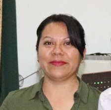
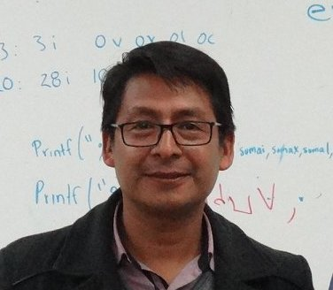

Dr. Salvador Enrique Lobato Larios
Doctorado en Ciencias
Instituto de idiomas
Ver currículum vitae
M.I.T.I.Florentino Méndez Gijón
Maestría en Ingeniería en Tecnologías de la Información
Instituto de ciencias ambientales
Ver currículum vitae

M.A.D. Mireya López Luna
Maestría en Alta Dirección
Instituto de ciencias ambientales
Ver currículum vitae

M.C. Juan Gabirel Ruiz Ruiz
Maestría en Medios Interactivos
Instituto de ciencias ambientales
Ver currículum vitae
M.I.T.I. Laura López Núñez
Maestría en Ingeniería en Tecnologías de la Información
Instituto de ciencias ambientales
Ver currículum vitae